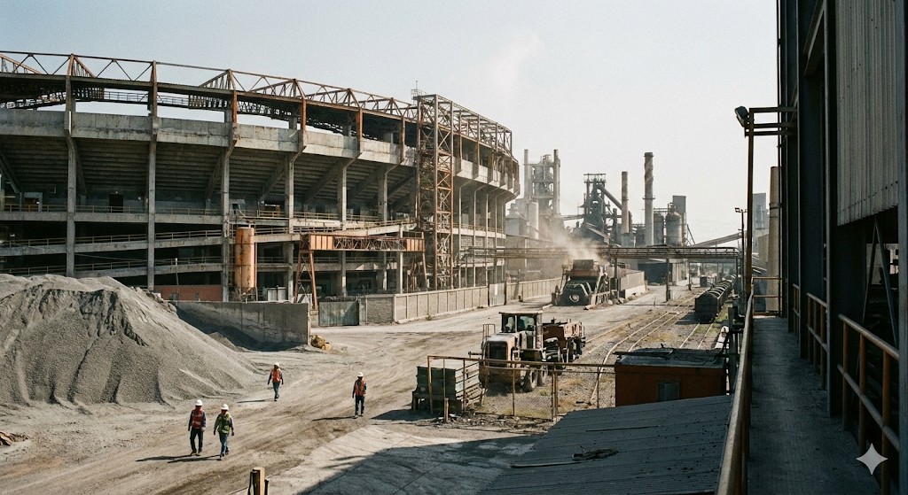

Monterrey is built on heat, limestone, and heavy industry. The Cementeros reflect the city’s foundries: unglamorous, structurally sound, and relentless. They play a compressed game designed to grind opponents into dust. Baseball here is not played — it is worked.

Built into a former steel complex, the park favors ground-ball pitchers and punishes mistakes with heat and echoing concrete.
| P | Victor “El Muro” Paredes |
| C | Salomon Cross |
| 1B | Diego Fortaleza |
| SS | Javier Hierro |
| LF | Tomas Kiln |
| CP | “Rusty” O’Neil |